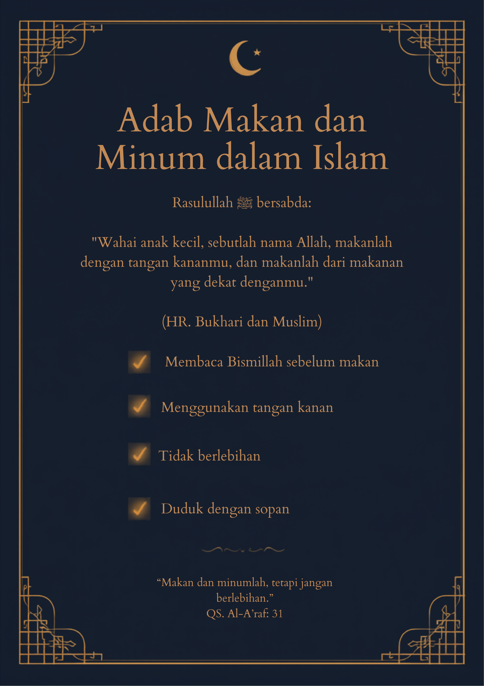

Poster edukatif mengenai beberapa adab makan dan minum berdasarkan ajaran Islam.

Poster ini menjelaskan beberapa adab makan dan minum yang dianjurkan dalam Islam, seperti membaca basmalah, menggunakan tangan kanan, tidak berlebihan, dan mengucapkan hamdalah setelah selesai makan.
"Makan dan minumlah, tetapi jangan berlebihan."
QS. Al-A'raf Ayat 31